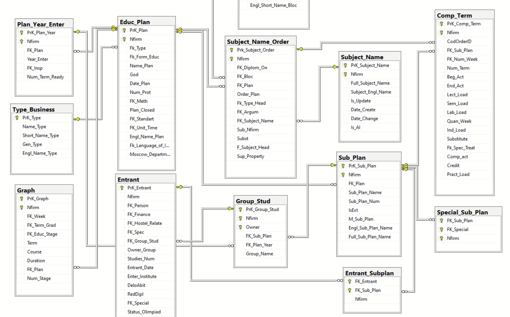

О документе: Этот документ описывает основные сущности БД NewStud и типовые связи/джойны, необходимые для построения запросов для расписания и анализа учебных планов. Структура ориентирована на поиск (RAG): каждую таблицу сопровождают назначение, ключи и шаблоны запросов.
Ключевые понятия
- NFirm — код подразделения (факультета). Для МГУ-уровня часто
99. В запросах почти всегда используется в условиях и связях. - Year_Enter — год набора/поступления (в таблице
Plan_Year_Enter). - Course/Kurs — курс обучения. Номер семестра:
Num_Term = (Kurs - 1) * 2 + Semester. - Semester (1|2) — семестр в учебном году. В ряде таблиц используется номер семестра
Num_Term(сквозная нумерация). - Sub_Plan — подплан (разбиение студентов на потоки/группы в рамках учебного плана).
- Subject_Name_Order (SNO) — расположение дисциплин в плане; сквозной ключ предмета в плане. Компоненты семестров (
Comp_Term) ссылаются на SNO черезCodOrderID. - Comp_Term (CT) — «компонент семестра»: хранит недельную нагрузку по типам занятий и длительность (в неделях) для конкретного подплана и семестра.
- Graph — календарная сетка плана: для каждого
Termзадаёт длительностьDuration(в неделях) и ссылки на недельный календарьFK_Week(таблицаNum_Week). Используется для проверки консистентности сComp_Term. - Status — статусы студента; для «активных» используются коды:
1, 2, 3, 4, 5, 9.
ER-обзор (словами)
-
Educ_Plan(план) 1—NPlan_Year_Enter(наборы год/план) -
Educ_Plan1—NSubject_Name_Order(позиции дисциплин в плане) -
Subject_Name_Order1—NComp_Term(черезComp_Term.CodOrderID = SNO.PrK_Subject_Order)
ОдновременноComp_Term.FK_Sub_Plan→Sub_Plan.PrK_Sub_Plan -
Educ_Plan1—NSub_Plan(подпланы плана) -
Sub_Plan1—NGroup_Stud(учебные группы набора) -
Group_Stud1—NEntrant(студенты), у которых активный статус вStatus(последняя запись по дате) -
Educ_Plan1—NGraph(календарные параметры по семестрам)
Graph.FK_Week→Num_Week.PrK_Week(нумерация учебных недель) -
Справочники:
Type_Business(уровень образования),Form_Education(очная/заочная),Subject_Name(словарь дисциплин),Spec/Name_Spec(направления)
Визуальная диаграмма базы данных

Рисунок 1: Структура базы данных NewStud с основными связями
Таблицы: назначение и ключи
Educ_Plan
Назначение: Учебный план факультета
Ключи/поля:
PrK_Plan (PK)NFirmFk_Type→Type_Business.PrK_TypeFk_Form_Educ→Form_Education.PrK_Form_EducFk_Standart(стандарт)Name_Plan,God(год создания)
Джойны:
-- План и его тип/форма
SELECT ep.PrK_Plan, ep.Name_Plan, tb.Name_Type, fe.Name_Form_Educ
FROM Educ_Plan ep
LEFT JOIN Type_Business tb ON tb.PrK_Type = ep.Fk_Type
LEFT JOIN Form_Education fe ON fe.PrK_Form_Educ = ep.Fk_Form_Educ
WHERE ep.NFirm = @Nfirm;Plan_Year_Enter
Назначение: Набор (год поступления) для плана
Ключи/поля:
PrK_Plan_Year (PK)NFirmFK_Plan→Educ_Plan.PrK_PlanYear_Enter
Джойны:
SELECT pye.Year_Enter
FROM Plan_Year_Enter pye
WHERE pye.NFirm = @Nfirm AND pye.FK_Plan = @PlanID;Subject_Name_Order (SNO)
Назначение: Позиции дисциплин внутри плана
Ключи/поля:
PrK_Subject_Order (PK)NFirmFK_Plan→Educ_PlanFK_Subject_Name→Subject_Name.PrK_Subject_NameSub_NFirm(владелец словаря предметов)- доп. признаки (
Sup_Property)
Джойны:
SELECT sno.PrK_Subject_Order, sn.Full_Subject_Name
FROM Subject_Name_Order sno
JOIN Subject_Name sn
ON sn.PrK_Subject_Name = sno.FK_Subject_Name
AND sn.NFirm = sno.Sub_NFirm
WHERE sno.FK_Plan = @PlanID AND sno.NFirm = @Nfirm;Comp_Term (CT)
Назначение: Недельная нагрузка предмета для конкретного подплана и семестра
Ключи/поля (основные):
PrK_Comp_Term (PK)NFirmCodOrderID→SNO.PrK_Subject_OrderFK_Sub_Plan→Sub_Plan.PrK_Sub_PlanNum_Term(номер семестра)FK_Num_Week(нумерация недель)Beg_Act/End_Act(валидность для набора)- недельные нагрузки:
Lect_Load,Sem_Load,Lab_Load,Pract_Load,Quan_Week
Джойны:
-- Нагрузка по предметам (часов за семестр = недельная * Quan_Week)
SELECT sn.Full_Subject_Name,
ct.Num_Term,
ct.Quan_Week,
ct.Lect_Load, ct.Sem_Load, ct.Lab_Load, ct.Pract_Load
FROM Comp_Term ct
JOIN Subject_Name_Order sno
ON sno.PrK_Subject_Order = ct.CodOrderID
AND sno.NFirm = ct.NFirm
JOIN Subject_Name sn
ON sn.PrK_Subject_Name = sno.FK_Subject_Name
AND sn.NFirm = sno.Sub_NFirm
WHERE ct.FK_Sub_Plan IN (SELECT sp.PrK_Sub_Plan FROM Sub_Plan sp WHERE sp.FK_Plan = @PlanID)
AND (@Num_Term IS NULL OR ct.Num_Term = @Num_Term);Sub_Plan
Назначение: Подплан (делит студентов на потоки/профили внутри плана)
Ключи/поля:
PrK_Sub_Plan (PK)NFirmFK_Plan→Educ_Plan.PrK_PlanSub_Plan_Name,Sub_Plan_Num,IsExt
Джойны:
SELECT sp.PrK_Sub_Plan, sp.Sub_Plan_Name
FROM Sub_Plan sp
WHERE sp.FK_Plan = @PlanID AND sp.NFirm = @Nfirm;Group_Stud
Назначение: Учебные группы (привязаны к подплану и году набора)
Ключи/поля:
PrK_Group_Stud (PK)NFirm,OwnerFK_Sub_Plan→Sub_PlanFK_Plan_Year→Plan_Year_EnterGroup_Name
Джойны:
SELECT gs.PrK_Group_Stud, gs.Group_Name
FROM Group_Stud gs
JOIN Plan_Year_Enter pye ON pye.PrK_Plan_Year = gs.FK_Plan_Year AND pye.NFirm = gs.NFirm
WHERE gs.FK_Sub_Plan IN (SELECT PrK_Sub_Plan FROM Sub_Plan WHERE FK_Plan = @PlanID);Entrant
Назначение: Студент (зачисленный в группу)
Ключи/поля:
PrK_Entrant (PK)NFirmFK_PersonFK_Group_Stud→Group_Stud.PrK_Group_StudOwner_Group,FK_Specи др.
Status
Назначение: Статусы студента. Последняя запись по дате — актуальный статус
Ключи/поля:
PrK_Status (PK)NFirmFK_Entrant→Entrant.PrK_EntrantFK_Status_Type,Status_Date
Актуальные статусы: 1, 2, 3, 4, 5, 9
Шаблон определения актуальных студентов подплана:
WITH last_status AS (
SELECT s.FK_Entrant,
ROW_NUMBER() OVER (PARTITION BY s.FK_Entrant ORDER BY s.Status_Date DESC, s.PrK_Status DESC) AS rn,
s.FK_Status_Type
FROM dbo.Status s
)
SELECT sp.PrK_Sub_Plan, sp.Sub_Plan_Name, COUNT(*) AS Studs
FROM Sub_Plan sp
JOIN Group_Stud gs ON gs.FK_Sub_Plan = sp.PrK_Sub_Plan AND gs.NFirm = sp.NFirm
JOIN Entrant en ON en.FK_Group_Stud = gs.PrK_Group_Stud AND en.NFirm = gs.NFirm
JOIN last_status ls ON ls.FK_Entrant = en.PrK_Entrant AND ls.rn = 1 AND ls.FK_Status_Type IN (1,2,3,4,5,9)
WHERE sp.FK_Plan = @PlanID
GROUP BY sp.PrK_Sub_Plan, sp.Sub_Plan_Name;Subject_Name
Назначение: Словарь дисциплин
Ключи/поля:
PrK_Subject_Name (PK)NFirmFull_Subject_Name,Subject_Engl_Name
Graph
Назначение: Календарная сетка плана по семестрам
Ключи/поля:
PrK_Graph (PK)NFirmFK_Week→Num_Week.PrK_WeekFK_Term_Grad,FK_Educ_StageTerm(сквозной номер семестра),CourseDuration(недель)FK_Plan→Educ_Plan.PrK_PlanNum_Stage
Сопоставление с Comp_Term: Graph.Duration ожидаемо равно Comp_Term.Quan_Week для соответствующего Term=Num_Term
Проверка:
SELECT g.FK_Plan, g.Term, g.Duration AS GraphWeeks, ct.Quan_Week AS CTWeeks,
COUNT(*) AS Items
FROM Graph g
JOIN Comp_Term ct
ON ct.NFirm = g.NFirm
AND ct.Num_Term = g.Term
JOIN Subject_Name_Order sno
ON sno.PrK_Subject_Order = ct.CodOrderID
AND sno.NFirm = ct.NFirm
WHERE g.FK_Plan = @PlanID
GROUP BY g.FK_Plan, g.Term, g.Duration, ct.Quan_Week;Num_Week
Назначение: Справочник недель учебного года
Ключи/поля:
PrK_Week (PK)Date_Week(часто хранится в форматеdd.mmили строковом виде)Num_Week
Применяется для привязки календаря в Graph и Comp_Term (через FK_Num_Week).
Type_Business / Form_Education
Назначение: Уровни/виды образования и формы обучения
Ключи/поля:
- Type_Business:
PrK_Type (PK),Name_Type,Short_Name_Type(напр.: «основное отделение», «магистратура» и т.п.) - Form_Education:
PrK_Form_Educ (PK),Name_Form_Educ,Short_Name_Form(очная/заочная и пр.)
Типовые задачи и запросы
1) Активные планы на учебный год
Логика: у плана есть хотя бы один подплан с активными студентами
и есть Comp_Term для семестров этого учебного года.
-- Псевдо: пользуйтесь Plan_Year_Enter.Year_Enter и формулой семестра по курсу2) Дисциплины и нагрузка для плана/семестра
SELECT sn.Full_Subject_Name,
ct.Num_Term,
Hours_Lect = ct.Lect_Load * ct.Quan_Week,
Hours_Sem = ct.Sem_Load * ct.Quan_Week,
Hours_Lab = ct.Lab_Load * ct.Quan_Week,
Hours_Pract = ct.Pract_Load * ct.Quan_Week
FROM Comp_Term ct
JOIN Subject_Name_Order sno ON sno.PrK_Subject_Order = ct.CodOrderID AND sno.NFirm = ct.NFirm
JOIN Subject_Name sn ON sn.PrK_Subject_Name = sno.FK_Subject_Name AND sn.NFirm = sno.Sub_NFirm
WHERE ct.FK_Sub_Plan IN (SELECT PrK_Sub_Plan FROM Sub_Plan WHERE FK_Plan = @PlanID)
AND ct.Num_Term = @Num_Term;3) Группы и численность по подпланам
См. пример с last_status выше; считает только студентов с актуальными «учебными» статусами.
4) Получение нагрузки по дисциплинам — процедура am_GetSubjLoads_v2
Назначение: Вернуть перечень дисциплин и часовую нагрузку по видам занятий за один семестр для указанного учебного плана. Результат формируется в разрезе подпланов (Sub_Plan) с возможностью фильтра по конкретному подплану.
Входные параметры:
@PlanID INT— Educ_Plan.PrK_Plan@Year_Study INT— год начала учебного года (например, 2025 для 2025/26)@Course INT— курс (≥ 1)@Semester INT— 1 = осенний, 2 = весенний@SubPlanID INT = NULL— необязательный фильтр по Sub_Plan.PrK_Sub_Plan
Ключевые вычисления:
@Num_Term = (@Course - 1) * 2 + @Semester— номер семестра (1..12)@Year_Enter = @Year_Study - (@Course - 1)— год набора для текущего курса- По
@PlanIDопределяется@Nfirm(фирма/факультет) - Проверяется наличие записи в
Plan_Year_Enterдля пары (@PlanID,@Nfirm,@Year_Enter). Если нет — ошибка
Полный код процедуры:
ALTER PROC [dbo].[am_GetSubjLoads_v2]
@PlanID INT, -- Educ_Plan.PrK_Plan
@Year_Study INT, -- год начала учебного года (например, 2025 для 2025/26)
@Course INT, -- курс (1..)
@Semester INT, -- 1 = осень, 2 = весна
@SubPlanID INT = NULL -- опционально: конкретный подплан (Sub_Plan.PrK_Sub_Pлан); NULL = показать все подпланы
AS
BEGIN
SET NOCOUNT ON;
IF @Course < 1
THROW 50001, N'@Course должен быть ≥ 1', 1;
IF @Semester NOT IN (1, 2)
THROW 50002, N'@Semester должен быть 1 или 2', 1;
DECLARE @Nfirm INT;
SELECT @Nfirm = ep.Nfirm
FROM dbo.Educ_Plan ep
WHERE ep.PrK_Plan = @PlanID;
IF @Nfirm IS NULL
THROW 50003, N'План с указанным @PlanID не найден', 1;
-- Преобразование «учебный год + курс + семестр» в параметры отбора Comp_Term
DECLARE @Num_Term INT = (@Course - 1) * 2 + @Semester; -- 1..12
DECLARE @Year_Enter INT = @Year_Study - (@Course - 1); -- год набора для текущего курса
/*
Жёстко привяжем план к набору через Plan_Year_Enter, чтобы отобрать только
те планы, которые действительно запускались в этот набор.
Если в некоторых НФ есть планы без записи в Plan_Year_Enter на заданный год,
можно поменять JOIN на LEFT JOIN и условие перенести в WHERE IS NOT NULL при необходимости.
*/
IF NOT EXISTS (
SELECT 1
FROM dbo.Plan_Year_Enter pye
WHERE pye.Nfirm = @Nfirm
AND pye.FK_Plan = @PlanID
AND pye.Year_Enter = @Year_Enter
)
BEGIN
-- По ситуации можно вернуть пустой набор без ошибки.
-- RAISERROR тут не бросаем, чтобы вызывающая сторона могла корректно обработать «нет данных».
THROW 50004, N'нет данных', 1;
END
SELECT
sp.PrK_Sub_Plan AS Sub_Plan_ID,
sp.Sub_Plan_Name AS Sub_Plan_Name,
sn.PrK_Subject_Name AS Subject_ID,
sn.Full_Subject_Name AS Subject_Name,
ct.Num_Term,
ct.Quan_Week,
-- часы за семестр по видам
SUM(ct.Quan_Week * ISNULL(ct.Lect_Load, 0)) AS Lect_Hours,
SUM(ct.Quan_Week * ISNULL(ct.Sem_Load, 0)) AS Sem_Hours,
SUM(ct.Quan_Week * ISNULL(ct.Lab_Load, 0)) AS Lab_Hours,
SUM(ct.Quan_Week * ISNULL(ct.Pract_Load, 0)) AS Pract_Hours,
-- при необходимости — индивидуальная работа (без умножения на недели, как в типовой модели)
SUM(ISNULL(ct.Ind_Load, 0)) AS Ind_Hours,
-- всего аудиторных часов
SUM(ct.Quan_Week * ( ISNULL(ct.Lect_Load,0)
+ ISNULL(ct.Sem_Load,0)
+ ISNULL(ct.Lab_Load,0)
+ ISNULL(ct.Pract_Load,0))) AS Total_Aud_Hours
FROM dbo.Subject_Name_Order sno
JOIN dbo.Subject_Name sn
ON sn.PrK_Subject_Name = sno.FK_Subject_Name
AND sn.Nfirm = sno.Sub_Nfirm
JOIN dbo.Comp_Term ct
ON ct.Nfirm = sno.Nfirm
AND ct.CodOrderID = sno.PrK_Subject_Order
AND ct.Num_Term = @Num_Term
AND ct.Beg_Act <= @Year_Enter
AND (ct.End_Act = 0 OR ct.End_Act >= @Year_Enter)
LEFT JOIN dbo.Sub_Plan sp
ON sp.Nfirm = ct.Nfirm
AND sp.PrK_Sub_Plan = ct.FK_Sub_Plan
WHERE sno.FK_Plan = @PlanID
AND sno.Nfirm = @Nfirm
AND (@SubPlanID IS NULL OR ct.FK_Sub_Plan = @SubPlanID)
-- При необходимости можно исключить служебные/внешние компоненты:
-- AND (sno.Sup_Property IS NULL OR sno.Sup_Property <> 55)
-- AND ISNULL(sp.IsExt, 0) <> 55
GROUP BY
sp.PrK_Sub_Plan, sp.Sub_Plan_Name,
sn.PrK_Subject_Name, sn.Full_Subject_Name,
ct.Num_Term, ct.Quan_Week
ORDER BY
Sub_Plan_Name, Subject_Name;
ENDГлоссарий полей (выборочно)
Beg_Act/End_ActвComp_Term— год набора, для которого компонент действителенSup_PropertyвSubject_Name_Order— признак служебных/исключаемых дисциплин (например,55— исключать из выборок)IsExtвSub_Plan— признак «внешнего» подплана (исключать из учебного расписания)
Рекомендации для агентов n8n
- Всегда фильтруйте по
NFirm(факультет), по возможности — поYear_EnterчерезPlan_Year_Enter - Для актуальных студентов используйте последнюю запись из
Statusи набор кодов(1,2,3,4,5,9) - Для расчёта часов за семестр умножайте недельные нагрузки
*_LoadнаQuan_Week - Для консистентности проверяйте
Graph.DurationпротивComp_Term.Quan_Weekпо одинаковомуTerm/Num_Term